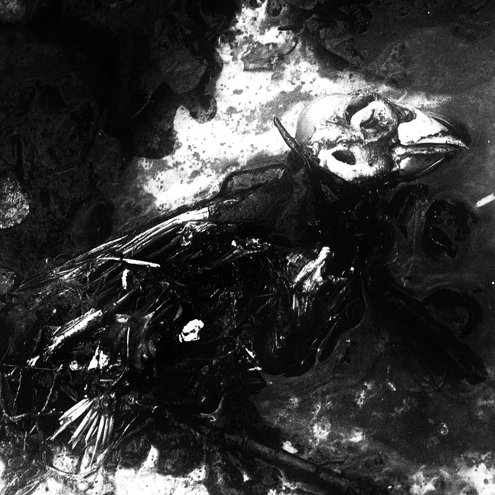
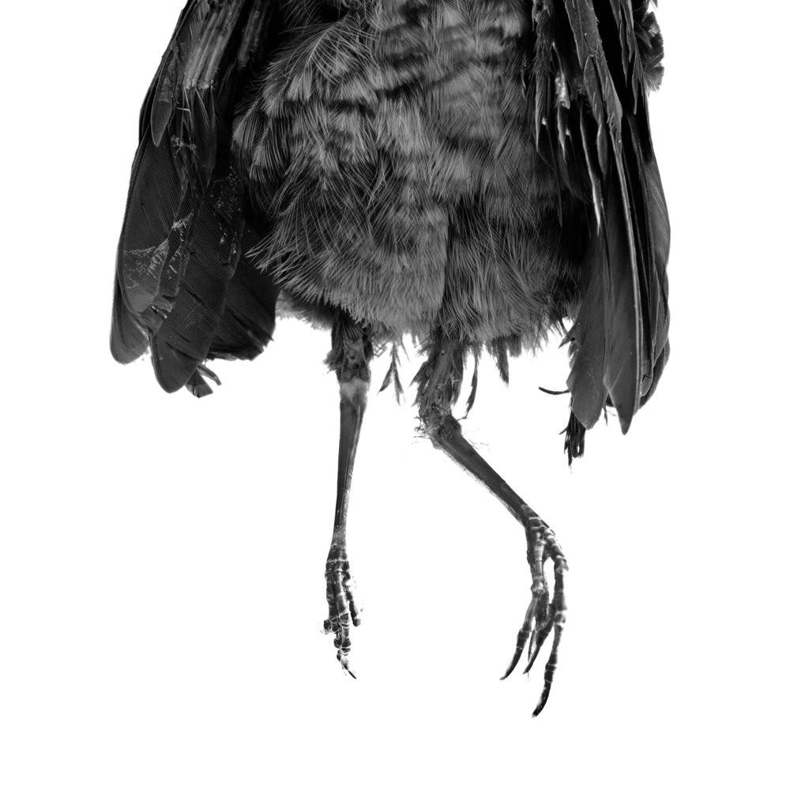
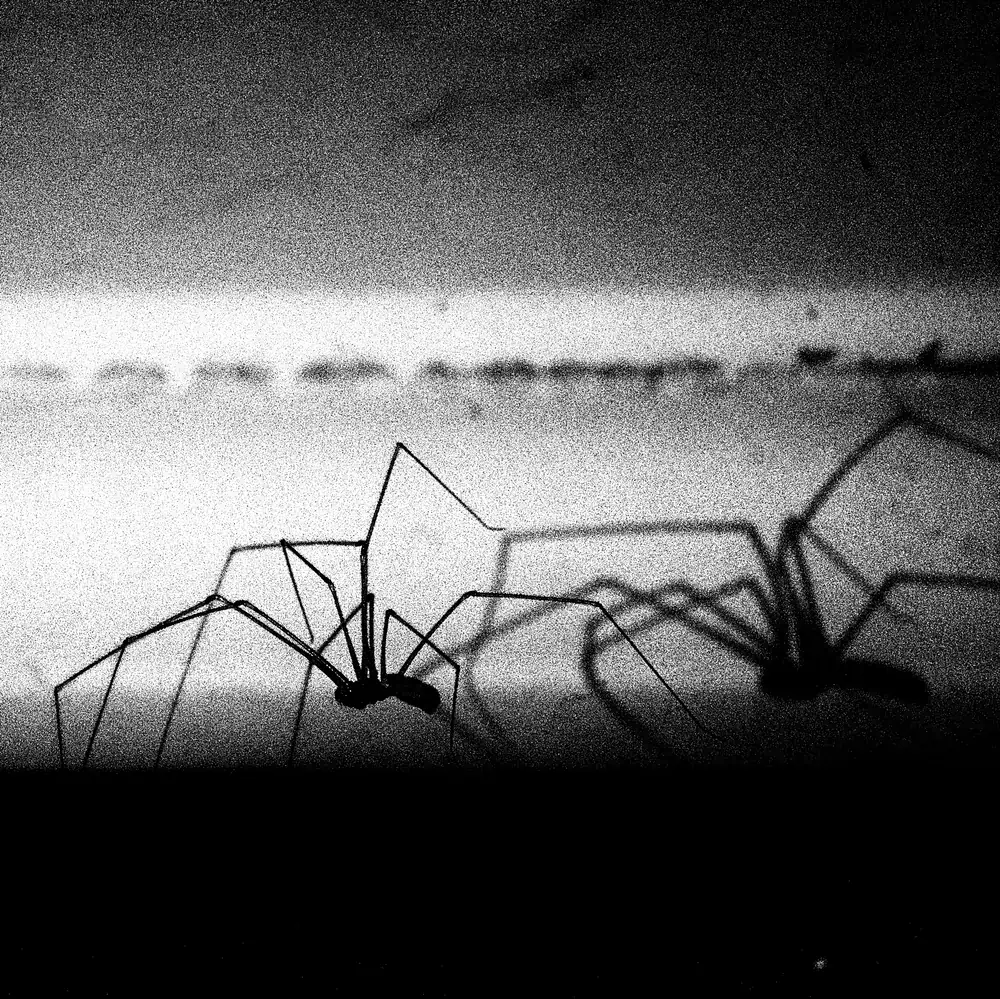

"Me"... what does it mean? This question may seem trivial and ubiquitous even though still no clear answer came into existence. Name? Given. Body? Named, and moreover, described as "one's own". As we understand it, the animal kingdom (excluding us in this instance) hasn't even allowed this concept near the gates of consciousness - or so we think. Is it safe to assume then that these beings slide through life with ease compared to... us? While this piece of text above might evoke weariness or even dismay, one clear notion emerges: all organisms capable of registering each other's presence share one common denominator - a mechanism. Meanwhile, the world serves as both an EXPO and a testing ground, where every being has an opportunity to showcase the results of their creativity in the wake of certain conditions imposed by the environment. This project is a bow to the process mentioned above and even an allegory of a being subjected to time and contingency, that contemplates the beauty of the monument erected by its' executioner and host.
Some photos were made possible thanks to the exhibition items provided by
ISEA PAS in Cracow.



curated by